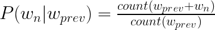
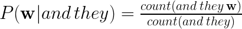
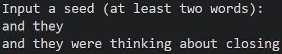
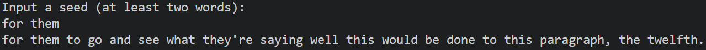
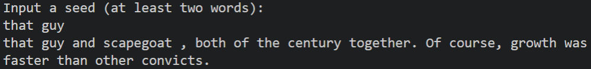

ngrams
Before the advent of machine learning and neural networks, one common method for generating test in any language was with n-grams: an incredibly simple statistical way to predicting the next word to come in a sequence given a large body of text to be trained on.

An n-gram is a just a bag of n words. For example, a bigram is a set of two words, like "is it" or "I am". My implementation uses trigrams, trained on the Open American National Corpus (OANC). To split a sentence into trigrams, you would iterate word by word, and grab the next two words with it. To demonstrate, "Today I am going outside" is split into three trigrams: "Today I am", "I am going", and "am going outside."
After that is done, we can predict words or generate sentences using somewhat random system. In order to guess, a word must be given a probability, defined with this expression:

Where w(n) is the word to be guessed, and w(prev) is, in my case, the previous two words, called the "context." Basically, the probability of seeing a certain word in given context is the number of times it shows up in that context, divided by the total number of times the context appeared. To make this more concrete, here is an example:

Once the possible words have been assigned a probability, you can use your choice of randomization methods to pick the next word. Continuing off of the previous example, let's say "and they" showed up 60 times, and the possible words to follow were "played", "sang", and "swam" with frequencies of 32, 16, and 12, respectively. The probability of seeing "and they played" would therefore be 32/60, or around 53%.
Of course, such a primitive "understanding" of language does not come without some obvious issues. Once again, using the previous example, suppose you had the sentence "they went down to the water and they ..." As humans, we might think that "swam" is the most likely to be the next word, but the model does not care about any of the context before the last two words, making "sang" more likely to be guessed than "swam."
Apart from that, the issue of sparsity also shows up. At a high level, sparsity refers to a lack of data in the model. Despite the large 15 million word OANC, there are still many phrases that do not exist within the dataset. The larger n-gram you go, the more of an issue sparsity becomes.
A Few Examples



Generate your own linguistic nonsense.
Notes and Technicalities
My implementation isn't entirely "correct" - there are a few details I left off, such as
I don't do any modification to the data, so results may be even more incoherent than expected due to random symbols or characters being out of place (such as a stray quotation mark or parentheses).
I chose to implement this using C++, as I believed Python to be too slow, but my inexperience in C++ could outweigh the benefits of choosing it over Python.